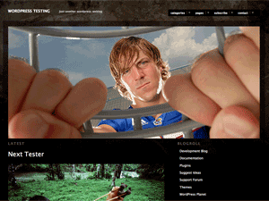

Modularity Lite is a minimalist photo and portfolio theme for WordPress. You need to have WordPress 2.9 or above installed on your server for this theme to work properly. Subscribe to Graph Paper Press' feed or follow us on the bleeding edge of development by following us on Twitter.
Here is a brief list of the major features:
If you want to make changes to how this theme looks and feels, than create a child theme. Never make changes to the original theme files. Why? Because when a new version of this theme is released, all of your changes will be lost when you update. Plus, making a child theme is incredibly easy. Here is how you do it.
Modularity Lite is a 950px wide, one or two column theme. We need to set up your default image and thumbnail sizes to allow for easy posting and consistent design structure. Click Settings - Media and set your thumbnail size to 150px wide by 150px tall. Set your medium size images to 590px wide. Do not set a height. Set your large size images to 950px wide. Do not set a height. Post thumbnails are generated automatically by the functions contained in this theme. This theme uses the new Post Thumbnail feature available in WordPress 2.9. Read more about this new feature here. If you need additional instructions on uploading photos, inserting photo galleries and using the WordPress interface, please view this screencast.
The homepage slideshow pulls in featured images of the latests posts you have uploaded into WordPress. Simply create a post and attach an image to the post with the image upload tools. The slideshow measures 950 pixels wide and 425 pixels tall.
Use WordPress' image upload tools to create and manage thumbnails.
You can control the links that show up in your navigation menu by configuring your menu at Appearance -> Menus. Watch a video tutorial on this WordPress feature.
There are a total of four widgetized areas on this theme, depending on which options you activate on the Theme Options panel. Three widgetized areas appear on the bottom and there is one sidebar widget. You can add and delete widgets by clicking Appearance - Widgets, from within your WordPress admin panel.
This theme uses jQuery javascript to do lots of fancy stuff. If your theme looks broken, than you likely have a plugin that uses a conflicting javascript library. Deactivate your plugins, one-by-one, to determine which plugin is conflicting with jQuery.
Still having trouble? Consider becoming a member of Graph Paper Press so you can get access to our private, well-groomed support forum, tutorials, and additional themes.